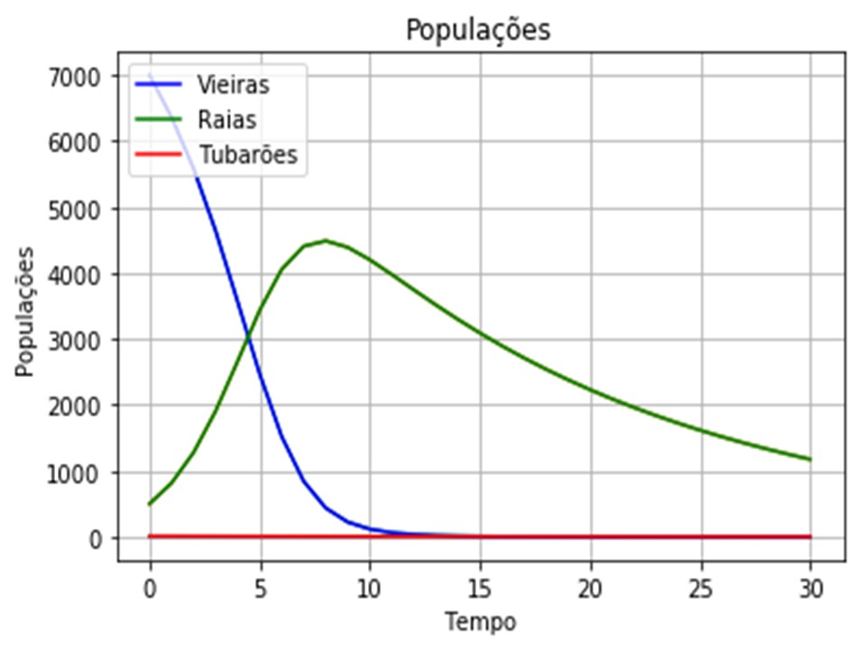

Dinâmica populacional
Este projeto consiste na criação de um modelo para um sistema físico envolvendo vieiras, tubarões e raias, e o uso desse modelo para responder uma questão criada. Foi necessário: 1º fazer uma pesquisa geral sobre o assunto para tentar entender melhor o sistema. 2º pensar sobre as diferentes questões possíveis de serem investigadas. 3º Abstrair, implementar e validar um ou mais modelos para o sistema. (feito no python) 4º Apresentar o projeto em um cartaz, para responder a pergunta que foi escolhida O maior desafio nesse projeto foi encontrar dados para a modelagem. Devido a falta de informação, muitas vezes foi necessário supor um valor inicial